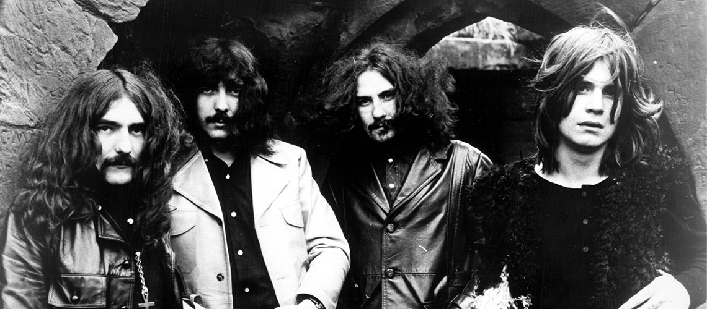
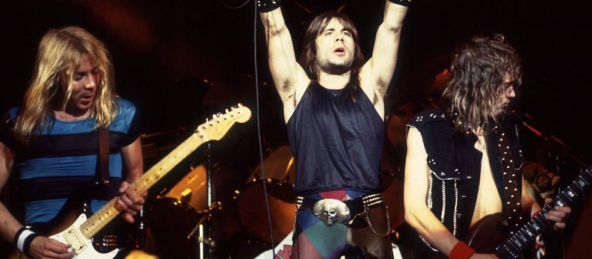

O ínicio
Desde 1869 quando o cientista Russo Dmitri Mendeleev publicou a primeira tabela periódica dos elementos, 23 metais foram considerados extremamente pesados. O escritor William Burroughs fez sua primeira referência ao termo metal pesado em 1959 no trecho:"Para mim, o metal é a expressão máxima do vício, que há algo realmente metálico no vício". Os caras da banda pioneira de rock Blue Cheer eram chamados de heavy metal kids em referência aos personagens dos livros de Burroughs. Mas o termo heavy metal foi usado pela primeira vez em uma música no de 1968 em Born to be Wild do Steppenwolf. Geezer Butler conta que alguém chamou o Black Sabbath de heavy metal como uma forma de insulto em uma crítica que dizia: "Isso não é música", soa mais como um monte de metais pesados explodindo no chão". alguém na inglaterra adotou essa expressão e todo mundo passou a usar. O primeiro disco do Black Sabbath em 1970 representou o nascimento do heavy metal. O sabbath foi a primeira banda a personificar tudo o que acabou se tornando heavy metal.
New Wave Of British Heavy Metal
Além do Sabbath bandas como Led Zeppelin e Deep Purple também tiveram grande influência na formação do heavy metal além do harf rock, muitos as chama de "Os três velhos deuses do rock". Não muito tempo depois que o Sabbath apresentou os ingtredientes básicos do heavy metal às massas, outras bandas pesadas como o Judas Priest, Kiss e AC/DC conceberam suas próprias fórmulas para a consagração do gênero. O Black Sabbath foi a primeira banda importante a a sair da Inglaterra, contudo, o Judas Priest não ficava muito atrás, a banda se formou em 1969. O visual motoqueiro do judas começou a ganhar força na época de Hell Bent for Leather mas foi com o disco British Steel que a banda alcançou o status de deuses do Metal. Inspiradas por Judas Priest e Black Sabbath, bandas como Iron Maiden, Saxon, Def Lepard e várias outras do Reino Unido lançaram o movimento New Wave of British Heavy Metal ou NWOBHM. A influência da NWOBHM se espalhou pelo Reino Unido e depois pela Europa inspirando bandas como as alemãs Accept e Scorpion, a dinamarquesa Mercyful Fate, além de uma pequena banda americana chamada Metallica.